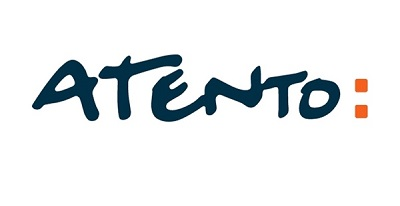
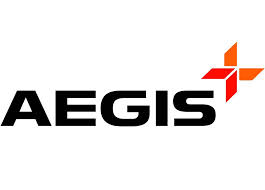

<div class="contenedor">
<div class="row">
    <h1>Experiencia laboral <h6><button name="button">+</button></h6></h1> 
    <div class="col-lg-1"></div>
    <div class="col-lg-11">
        
        <h4> ATENTO Argentina S.A </h4>
        <ul><li>Representante de atención al cliente (Cuenta 112 Movistar)</li>
          <li>Noviembre 2020 - actualidad</li>
          <li>Asesoramiento sobre todo lo relacionado a facturación, tanto para línea telefónica como para servicio de internet y características de servicios contratados. Oferta y venta de productos y servicios disponibles para la línea del cliente</li></ul>

     <h4> GEMSA Automotores S.A - Concesionaria oficial de Chevrolet </h4>
      <ul><li>Asesor de ventas multicanal</li>
        <li>Junio 2019 - Octubre 2019</li>
        <li>Venta de 0KM de manera convencional (contado, efectivo y crédito, efectivo-usado, efectivo-crédito-usado) y mediante planes de ahorro. Contacto con clientes a través de diversos medios: llamadas telefónicas (entrantes y salientes), WhatsApp y redes sociales. </li></ul>

     <h4> INDIANA S.A.C.I.F.I - Concesionaria oficial de Peugeot </h4>
      <ul><li>Responsable de preparación</li>
      <li>Agosto 2017 - Febrero 2018</li>
      <li>Responsable de grupo de trabajo, con función principal en supervisar el cumplimiento de procesos y diagramar las acciones necesarias para la obtención de los objetivos establecidos, los cuales consistían en garantizar la entrega de 0KM a los clientes en tiempo y forma.</li></ul>
        
    <h4> AEGIS Argentina S.A - Contact Center</h4>
    <ul><li>Coordinador Jr. (Cuenta 112 Telefónica)</li>
      <li>Marzo 2011 - Junio 2017</li>
      <li>Responsable de distintos grupos de trabajo en los años indicados (campañas de ventas y posventa). Supervisión del cumplimiento de procesos y diagramación de las acciones necesarias para la obtención de los objetivos establecidos en cuanto a atención y ventas. </li></ul>

    <h4> AEGIS Argentina S.A - Contact Center</h4>
    <ul><li>Representante de atención al cliente (Cuenta 112 Telefónica)</li>
    <li>Noviembre de 2009 - Febrero de 2011</li>
    <li>Asesoramiento sobre todo lo relacionado a facturación, tanto para la línea telefónica como para servicio de internet, y características de servicios contratados. Oferta y venta de productos y servicios disponibles para la línea del cliente.</li></ul>
  </div>
    </div>
  </div>